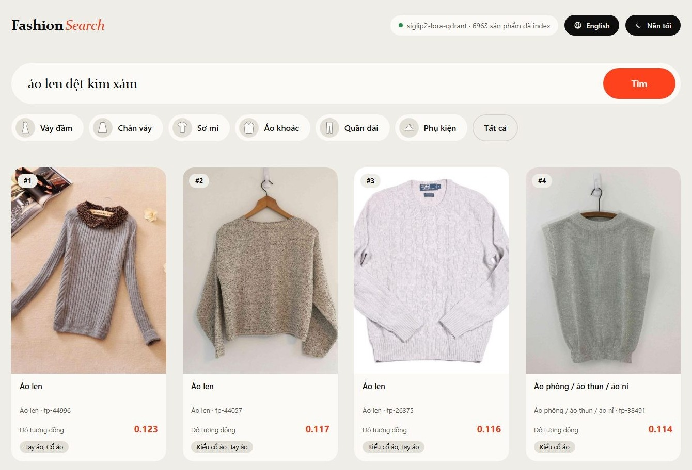

Tìm Kiếm Thời Trang
Đa Phương Thức
Hệ thống truy vấn catalog thời trang song ngữ văn bản và hình ảnh dựa trên kiến trúc Hexagonal, mô hình SigLIP 2 kết hợp tinh chỉnh tham số DoRA.
Khoảng Cách Ngữ Nghĩa và Đặc Thù Tiếng Việt
Ngôn Ngữ Phong Phú
Người dùng sử dụng phong phú từ mượn ("blazer oversize", "croptop"), từ địa phương ("áo bà ba", "váy xoè") và thuật ngữ phong cách ("vintage", "minimalist").
Khoảng Cách Đa Phương Thức
Mô tả văn bản trừu tượng không trùng khớp trực tiếp với không gian điểm ảnh thời trang (pixel space). Cần cầu nối nhúng liên phương thức (Joint Embedding Space).
Yêu Cầu Truy Xuất Thực Tế
Phục vụ danh mục hàng nghìn sản phẩm theo thời gian thực (< 200 ms), hỗ trợ cả hai chiều truy vấn: nhập văn bản hoặc tải ảnh trực tiếp.
Xây Dựng Hệ Thống Truy Xuất Hoàn Chỉnh
Trích xuất từ bộ dữ liệu Fashionpedia, khử trùng tuyệt đối bằng Perceptual Hash, thiết lập tập test cô lập phục vụ demo và đánh giá.
Đo lường trên cùng 155 truy vấn: BM25, CLIP ViT-B/32, ViSigLIP-OT, SigLIP 2 Zero-shot và SigLIP 2 + DoRA Adapter.
Vận hành trọn vẹn: Lập chỉ mục HNSW, Huấn luyện DoRA, Đánh giá Paired Bootstrap, FastAPI Backend và Web UI song ngữ.
SigLIP 2 và Contrastive Sigmoid Loss
Chuẩn Hóa Toàn Cục Mini-Batch
Phân Loại Nhị Phân Độc Lập
DoRA: Phân Tách Độ Lớn và Hướng Trọng Số
Công Thức Phân Rã Trọng Số DoRA
Vị Trí Cấy Ghép Adapter
q_proj, k_proj, v_proj, out_proj.GradCache: Tích Lũy Effective Batch 256
Forward Sub-Batches
Chia nhỏ dữ liệu thành các batch vật lý kích thước $B_{\text{phys}} = 32$. Forward qua model ở chế độ no_grad để thu thập các vector biểu diễn rút gọn.
Tập Trung Tính Loss
Gom toàn bộ 256 vector đại diện lại trên GPU để tính toán hàm mất mát Sigmoid Contrastive trên toàn bộ kích thước mẫu lớn.
Backward Cục Bộ
Thực hiện lan truyền ngược từng sub-batch kèm theo gradient đã được gán nhãn từ bước Loss, cập nhật trọng số adapter DoRA an toàn.
Khai Phá Mẫu Âm Khó (Hard Negatives)
Chiến Lược 2 Giai Đoạn
Tác Động Lên Không Gian Vector
Ngăn ngừa tình trạng mô hình chỉ dựa vào loại sản phẩm tổng thể để xếp hạng.
• Mẫu âm khó: Váy công sở tay bồng cùng màu trắng (buộc mô hình chú ý đến "hai dây" và "đi biển").
Kiến Trúc Hexagonal: Ports và Adapters
Embedder
Hợp đồng mã hóa văn bản và hình ảnh thành vector L2-normalized.
VectorStore
Hợp đồng lưu trữ vector kèm payload và truy vấn láng giềng k-NN.
Retriever
Hợp đồng chuyển đổi Query thành danh sách kết quả xếp hạng.
MetricsPort
Đo lường độc lập Recall@K, MRR, nDCG@10, Cohen Kappa và Bootstrap.
configs/ · Dynamic Registry PatternQdrant Vector DB và FastAPI Serving
Chỉ Mục Vector Qdrant HNSW
REST API và Web UI Phục Vụ
Pipeline Dữ Liệu: Lọc Trùng và Phân Tách
Tập dữ liệu Fashionpedia (Jia et al., ECCV 2020) tải về từ Hugging Face gồm danh mục sản phẩm và bounding box.
Sử dụng thuật toán Perceptual Hash để quét và loại bỏ triệt để các ảnh trùng lặp thị giác trước khi phân chia tập.
Phân chia tỷ lệ 70% Train (32,491) / 15% Val (6,962) / 15% Test (6,963) cố định seed 42. Tập Test được bảo vệ tuyệt đối.
155 Truy Vấn Tiếng Việt Thuộc 4 Nhóm
Màu sắc hoặc kiểu dáng đơn giản.
Ví dụ: "áo sơ mi trắng", "chân váy xoè".
Kết hợp nhiều đặc trưng hình thể và màu.
Ví dụ: "áo len cổ lọ màu be form rộng".
Thử thách ngữ nghĩa bản địa hoá.
Ví dụ: "blazer kẻ caro", "áo bà ba".
Ngữ cảnh trừu tượng cao cấp.
Ví dụ: "đầm dự tiệc sang trọng", "thanh lịch".
Pooled Top-20 và Graded Relevance
Pooled Top-20
Thu thập Top-20 ứng viên từ tất cả các hệ thống, xáo trộn ngẫu nhiên để thẩm định viên chấm nhãn mù (blind review), loại bỏ định kiến thiên vị mô hình.
Thang Điểm Graded (0/1/2)
• 1 (Partially): Đúng danh mục, lệch màu hoặc dáng.
• 2 (Exact Match): Khớp hoàn toàn mọi thuộc tính.
Độ Tin Cậy Kappa
Chỉ số Cohen's Kappa giữa 3 cặp người chấm: $\kappa \in [0.441, 0.520]$ thể hiện mức độ đồng thuận thực tế (moderate agreement) đúng chuẩn thực nghiệm.
So Sánh Định Lượng 5 Hệ Thống
| Hệ Thống Truy Xuất | Recall@1 | Recall@5 | Recall@10 | MRR | nDCG@10 |
|---|---|---|---|---|---|
| SigLIP 2 + DoRA (Fine-tuned) | 0.697 | 0.852 | 0.884 | 0.766 | 0.684 |
| SigLIP 2 (Zero-shot) | 0.490 | 0.774 | 0.865 | 0.606 | 0.449 |
| BM25 (Từ khóa cổ điển) | 0.200 | 0.471 | 0.568 | 0.318 | 0.179 |
| CLIP ViT-B/32 (Zero-shot) | 0.168 | 0.381 | 0.426 | 0.252 | 0.139 |
| ViSigLIP-OT | 0.084 | 0.226 | 0.277 | 0.145 | 0.066 |
Recall@1: Tăng Trưởng +42.2%
Ý Nghĩa Thực Tiễn Cốt Lõi
Kiểm Định Bootstrap: p < 0.0001
p-value < 0.0001. Khoảng tin cậy hoàn toàn nằm bên dương, khẳng định sự vượt trội không thể do ngẫu nhiên.
p-value < 0.0001. Tốc độ đưa kết quả chuẩn xác lên đầu trang có ý nghĩa thống kê áp đảo.
Khoảng tin cậy $[-0.013, +0.052]$ chứa giá trị 0. Minh chứng tính trung thực khoa học: Không tô hồng kết quả.
Phân Tích 20 Ca Lỗi: Lỗ Hổng Phụ Kiện
Hai Nguyên Nhân Gốc Chính
Bài Học Về Bộ Lọc Tự Động
Khẳng định: Báo cáo chính thức giữ nguyên toàn bộ 155 queries để bảo toàn tính liêm chính dữ liệu thực nghiệm.
Giới Hạn và Đánh Đổi Kỹ Thuật
DoRA vs Plain LoRA
DoRA (0.697) và LoRA (0.690) chưa thể hiện sự khác biệt có ý nghĩa thống kê trên tập 155 queries.
Độ Trễ Phục Vụ
Chưa đạt mục tiêu 200 ms trên máy thử nghiệm do nạp adapter lúc runtime mà chưa merge trực tiếp trọng số vào backbone.
Truy Vấn Bằng Ảnh
Tháp hình ảnh được huấn luyện qua cặp Text-Image; chưa có tập ground-truth riêng để đo độ chính xác Image-to-Image.
Môi Trường Chạy
Huấn luyện trên một lượt chạy duy nhất (seed 42); các trục ablation còn lại cần mở rộng trên cụm GPU lớn hơn.
Giao Diện Web và Trải Nghiệm Người Dùng

uvicorn app.api:app · Truy cập tại: http://localhost:8000/uiĐóng Góp Cốt Lõi và Lời Cảm Ơn
3 Đóng Góp Kỹ Thuật Đã Được Kiểm Chứng
Cảm Ơn Thầy Cô và Các Bạn!
Nhóm nghiên cứu sẵn sàng lắng nghe các nhận xét và câu hỏi thảo luận từ Hội đồng.
ml_advanced